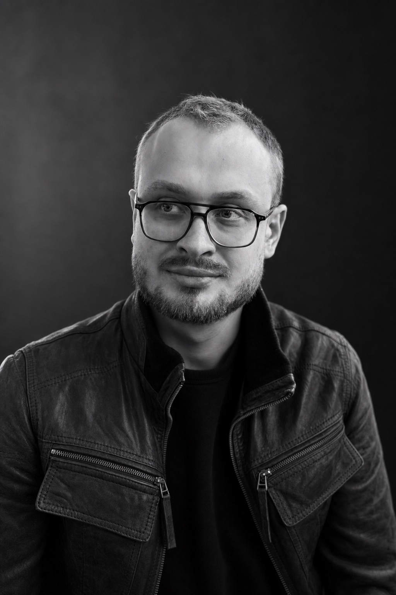

2026
Publications
2023
PhD Student · Computer Security & Privacy

I am a PhD student at the Chair for Security and Privacy of Ubiquitous Systems at Ruhr University Bochum, supervised by Prof. Dr. Veelasha Moonsamy.
My research focuses on traffic analysis and active deanonymization attacks against anonymity systems, particularly Tor. I currently work on traffic watermarking and on adaptive techniques that combine network measurements with reinforcement learning.
Publications
Contact
Affiliation
Ruhr University Bochum